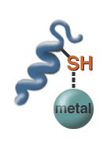

Kidneys and Metals Problem Set
Problem 3: Properties of metals and health implications
For help to answer the question:
Which of the following is NOT characteristic of metals?
A. Metals are often charged ions. B. Metals can be destroyed or degraded in the body. C. Metals easily bond to other molecules. D. Metals can have various oxidation states.
Tutorial
Elements| Metals are elements, so they cannot be destroyed or broken down. Metals can linger in the environment and in human bodies for long periods of time. Many other toxic substances are compounds and can be broken down by the body to make them less toxic. Metals cannot be broken down to reduce toxicity. However some metals can be made less toxic by the addition of chemical groups to the metal. For example, arsenic can be made less toxic by the addition of a methyl (CH3) group. |
Species
|  Metals can have different species with different amounts of charge and these charged atoms easily and quickly form complexes with enzymes and other biological molecules. The amount of charge also affects how easily the metal can get into cells. Iron, for example, in the Fe++ species, cannot cross membranes very easily. This restricts where it can go in the body. Hg+ can easily penetrate membranes and is quickly distributed around the body. |
|
If you look at a periodic table, you will see that most metals are located near each other. This means that they behave similarly and one can easily replace one another in a protein or molecule. This may result in health problems. For example, lead, a toxic metal, tends to get stored in the bones because it mimics calcium, a metal that is a major component of healthy, normal bones. Another example of mimicry occurs in the "engine" of the cells. A molecule called "ATP" is one of the major energy sources for all of our cells. It has three phosphate (PO4) molecules in it. Phosphate contains the metal phosphorus (P). When it is metabolized it provides energy and phosphate (PO4) which is used all over the body.
Another metal, arsenic (As), can mimic phosphorus in ATP. When this happens, the product of the reaction is ADP + AsO4. The AsO4 is not useful, compared to PO4, because it cannot be used to produce energy. |


The Biology Project
The University of Arizona
Monday, February 22, 1999
Contact the Development Team
http://biology.arizona.edu
All contents copyright © 1999. All rights reserved.